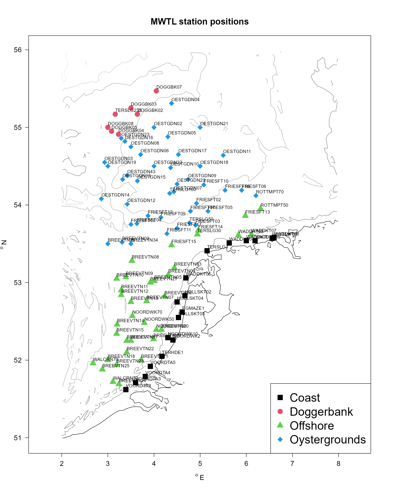
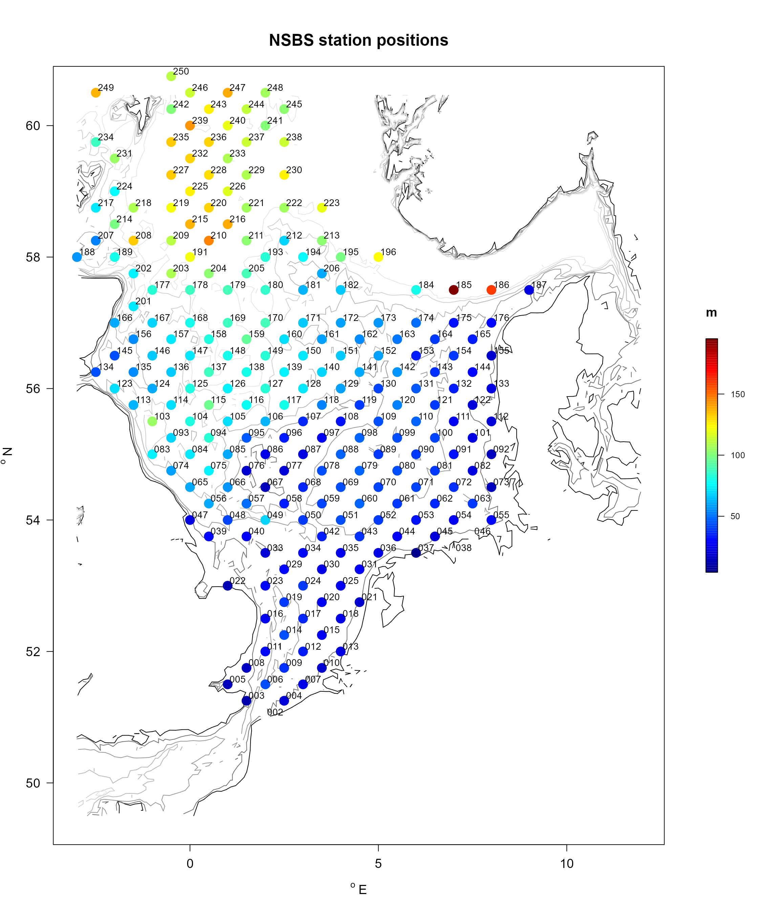
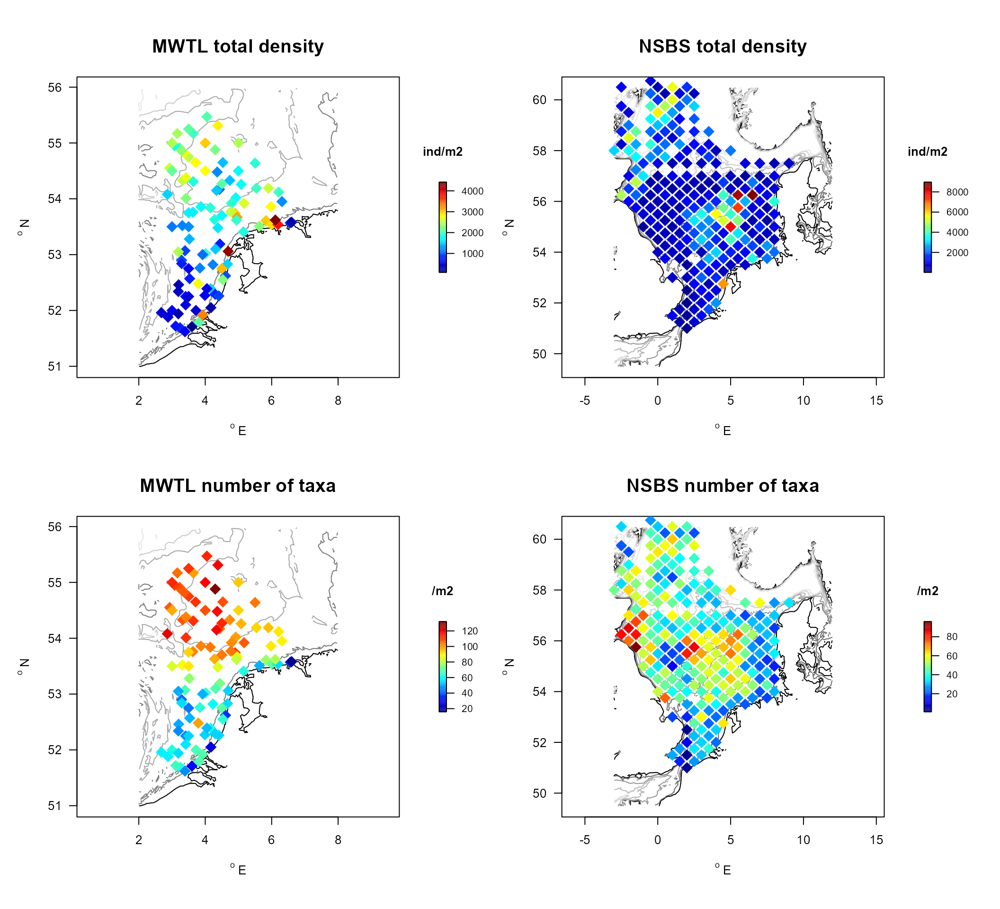
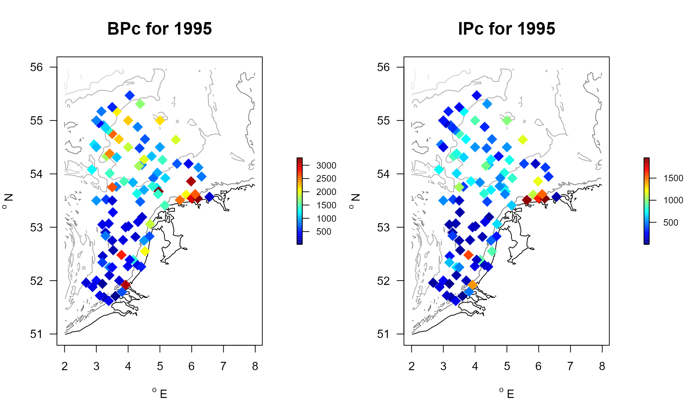

Benthic density and trait databases in R-package Btrait
Karline Soetaert and Olivier Beauchard
18 November 2022
BtraitData.RmdIntroduction.
The R-package Btrait facilitates working with a combination of biological density, trait, and taxonomic data. It contains:
- functions for working with density and trait data (getDensity, getTraits, getTraitDensity, …),
- two data sets with macrobenthos species density and biomass data from the Northsea (MWTL, NSBS),
- data sets with functional trait data (Traits_nioz, Traits_cefas, Traits_Db, Traits_irr).
The main vignette Btrait demonstrates how to use the functions in the package using a small data set.
This vignette introduces the benthic databases.
The Northsea macrobenthos density data
The macrobenthos are animals living in the sediment and that are retained on a sieve with mesh size of 1mm. They are important for the ecosystem services they deliver, i.e. by their impact on biogeochemistry (nutrient dynamics), and as they are an important food source to fishes.
Btrait contains two data sets that contain Northsea macrobenthos density and biomass:
- the MWTL data, (one or three-) yearly data from the Dutch part of the North Sea, and
- the NSBS (Northsea Benthos Survey) data, a one-time survey that covers the entire North Sea.
The MWTL dataset
The Dutch Rijkswaterstaat (RWS) has performed regular macrobenthos sampling in the Dutch part of the Northsea, from 1995 till 2018. This activity is called “MWTL monitoring” .
The monitoring was done on a yearly basis from 1995 till 2010, after which sampling was less frequent, occurring in 2012, 2015, 2018. Not all stations were always sampled though; 5 stations were sampled 18 rather than 19 times; another 6 stations were sampled less or equal than 12 times.
The sampling region extends inbetween (2.68, 6.6) dg East and (51.62, 55.47) dg North, with water depths varying in between (5.8, 53.7) m.
There are 41849 records in this macrofauna data set for 103 stations.
Sampling started in 01-03-2001; the last sample taken in 31-05-1995.
Taxonomy was adjusted to account for rare taxa, determined on a high taxonomic level.
The sampled organisms belonged to 400 different taxa (after adjustment); before adjustment 525 taxa were distinguished.
Biomass, expressed in ash-free dry weight per square m ([gDWT/m2]), was estimated at similar taxonomic level as density estimates.
The data from these monitoring campaigns are available from RWS; they have been and made available in the framework of the EMODNET biology project.
Note that this database is atypical in the sense that sometimes the station x sampling date x taxon can be present multiple times. This is because sometimes organisms of the same taxon but very different sizes were weighed separately, or because taxa were later reclassified to another taxon that was already available. One example of such double occurrence is:
DOUBLE <- subset(MWTL$density,
subset=(station=="TERHDE1" & year==2018 & taxon == "Donax vittatus"))
knitr::kable(DOUBLE, caption = "example of a double occurrence in the MWTL dataset",
row.names=FALSE)| station | date | year | taxon | density | biomass | taxon.original |
|---|---|---|---|---|---|---|
| TERHDE1 | 16-03-2018 | 2018 | Donax vittatus | 38.46154 | 1.2884615 | Donax vittatus |
| TERHDE1 | 16-03-2018 | 2018 | Donax vittatus | 38.46154 | 0.0064103 | Donax vittatus |
The NSBS dataset
In 1986, a large macrofauna survey took place covering the entire Northsea (Heip et al., 1992). Benthic samples were taken in a standardised way, on a regular grid covering the whole of the North Sea, and analysed by scientists from 10 laboratories. Extensive work was done to standardise taxonomy and identifications across the different laboratories.
The sampling region for these data extends inbetween (-3, 9) dg East and (51, 60.75) dg North, depths varying inbetween (4.1999998, 195.1999969) m.
There are 11150 records in this macrofauna data set for 234 stations.
Sampling took place in 1986; the actual sampling time was not recorded.
The sampled organisms belonged to 552 different taxa.
Biomass, expressed in ash-free dry weight per square m ([gDWT/m2]), was estimated at low taxonomic level, distinguishing between Polychaeta (class), Mollusca, Echinodermata, Crustacea (phylum) or even at higher level (Animalia). As this is at much lower resulution as density estimates, biomass is stored in a separate data.frame.
Structure of the density data sets
The density data have been gathered in a list called MWTL and NSBS that contains a number of data.frames:
- MWTL$density, NSBS$density, NSBS$biomass: the species (taxon) density and biomass data, in long format. The MWTL$density data.frame, provides stations, date, taxon, density (ind/m2) and biomass (ashfree dry weight/m2). The column “taxon.original” refers to the original taxon, and “taxon” the selected taxon after ‘taxonomic adjustment’ (see help file, help(“MWTL$density”), for how taxa were adjusted). Density and biomass data are in separate dataframes for the NSBS data.
- MWTL$stations, NSBS$stations: coordinates of the stations referred to in MWTL$density and NSBS$density, in WGS84 format.
- MWTL$sediment, MWTL$abiotics, MWTL$types, NSBS$abiotics: abiotic conditions from various sources (Wilson et al., 2018; MWTL, Deltares).
- MWTL$contours: bathymetric contour lines for quick plotting of the data. Contours were generated by applying the contourLines function from base R (R core team 2021), and are based on high-resolution GEBCO bathymetry data from the Northsea.
The taxonomic relationships between taxa is in a data.frame called Taxonomy, as generated with the worms package (Holstein, 2018).
The positions and names of the MWTL and NSBS stations is in the following figures, where the colors either denote the area (MWTL) or water depths (NSBS).
Each of these data.frames, has a description in its attributes, which can be extracted with the function metadata.
metadata(MWTL$density)## name description units
## 1 station station name
## 2 date sampling date, a string
## 3 taxon taxon name, checked by worms, and adjusted
## 4 density species total density individuals/m2
## 5 biomass species total ash-free dry weight gAFDW/m2
## 6 taxon.original original taxon nameStation positions
We use function mapBtrait to generate figures with station positions, passing the respective contours for each dataset. The R-function merge is used to augment the data.frame types (that contains the area to which each station belongs), with the longitudes (x) and latitudes (y) in the stations data.frame.
MWTLab <- merge(MWTL$stations,
MWTL$types, by="station")
MWTLab$area <- factor(MWTLab$area)
par(las=1, oma=c(0,0,1,0), cex.axis=1.2, cex.main=2, cex.lab=1.2)
with(MWTLab,
mapBtrait(contours=MWTL$contours, x=x, y=y, col=c(1:4)[area],
pch=c(15:18)[area], cex=2, main="MWTL station positions",
clab="m", draw.levels=TRUE))
with(MWTL$stations, text(x, y+0.05, label=station, cex=0.8, adj=0))
legend ("bottomright", legend=levels(MWTLab$area), col=1:4, pch=15:18, cex=2)
NSBSabio <- merge(NSBS$stations, NSBS$abiotics, by="station")
par(las=1, oma=c(0,0,1,0), cex.axis=1.2, cex.main=2, cex.lab=1.2)
with(NSBSabio,
mapBtrait(contours=NSBS$contours, x=x, y=y, colvar=depth,
pch=16, cex=2, main="NSBS station positions",
clab="m", draw.levels=TRUE))
# remove the "ICES" from the station names
with(NSBS$stations, text(x=x+0.05, y=y+0.08,
label=substr(station, 5, 7), cex=0.9, adj=0))
Consistency of the density databases
We test the consistency of both data sets, by looking at the total density, biomass, and number of taxa of stations that were sampled in common.
To find the common stations, we merge the station information of both datasets, by the coordinates (x, y):
Common <- merge(MWTL$stations,
NSBS$stations,
by=c("x", "y"))
colnames(Common)[3:4] <- c("MWTL", "NSBS")
knitr::kable(Common, caption="stations in common by MWTL and NSBS dataset",
row.names=FALSE)| x | y | MWTL | NSBS |
|---|---|---|---|
| 3.0 | 52.00 | BREEVTN18 | ICES012 |
| 3.0 | 53.50 | BREEVTN26 | ICES034 |
| 3.0 | 54.50 | OESTGDN19 | ICES068 |
| 3.0 | 55.00 | DOGGBK08 | ICES087 |
| 3.5 | 52.25 | BREEVTN17 | ICES015 |
| 3.5 | 52.75 | BREEVTN13 | ICES020 |
| 3.5 | 53.75 | FRIESFT08 | ICES042 |
| 3.5 | 54.75 | OESTGDN08 | ICES078 |
| 3.5 | 55.25 | DOGGBK03 | ICES097 |
| 4.0 | 54.50 | OESTGDN22 | ICES069 |
| 4.0 | 55.00 | OESTGDN02 | ICES088 |
| 4.5 | 52.75 | HOLLSKT04 | ICES021 |
| 5.0 | 54.50 | OESTGDN18 | ICES070 |
| 5.0 | 55.00 | OESTGDN21 | ICES089 |
To test whether the density, biomass and number of taxa are comparable in both datasets, we estimate these quantities for the common stations and plot them versus one another, adding the 1:1 line.
The biomass and density data are compatible. The total number of taxa found in the NSBS data set is much lower than in the MWTL data set, but this is not surprising, as the MWTL data were sampled on a regular basis over 19 years, whereas the NSBS data were gathered in a one-time event.
In the figures below, maps of total density and number of taxa are created for both data sets.
MWTL.summ <- with (MWTL$density,
getSummary(descriptor = station,
averageOver = year,
taxon = taxon,
value = density))
NSBS.summ <- with (NSBS$density,
getSummary(descriptor = station,
taxon = taxon,
value = density))
par(mfrow=c(2,2))
par(las=1, oma=c(1,1,1,1), cex.main=2)
with(merge(MWTL$stations, MWTL.summ$density, by=1),
mapBtrait(contours=MWTL$contours, x=x, y=y, colvar=density,
pch=18, cex=2, main="MWTL total density",
clab="ind/m2", draw.levels=TRUE))
with(merge(NSBS$stations, NSBS.summ$density, by=1),
mapBtrait(contours=NSBS$contours, x=x, y=y, colvar=density,
pch=18, cex=2, main="NSBS total density",
clab="ind/m2", draw.levels=TRUE))
with(merge(MWTL$stations, MWTL.summ$taxa, by=1),
mapBtrait(contours=MWTL$contours, x=x, y=y, colvar=taxa,
pch=18, cex=2, main="MWTL number of taxa",
clab="/m2", draw.levels=TRUE))
with(merge(NSBS$stations, NSBS.summ$taxa, by=1),
mapBtrait(contours=NSBS$contours, x=x, y=y, colvar=taxa,
pch=18, cex=2, main="NSBS number of taxa",
clab="/m2", draw.levels=TRUE))
Benthic trait databases
Four benthic trait datasets are included in R-package Btrait:
- Beauchard et al. (2021, in press) compiled 32 traits from 281 taxa. The traits comprise both “functional effects” traits, which affect ecosystem properties, and “response” traits, which affect a species’ response from changes in the environment, such as disturbance. The traits are fuzzy coded; taxonomic level is mainly on species level. This extensive trait database is called Traits_nioz.
- Clare et al (2022) compiled 10 traits from 1025 taxa; mainly on genus level. These fuzzy coded traits are in Traits_cefas.
- Traits necessary to estimate the Bioturbation potential of 1060 taxa were compiled by Queiros et al 2013; these data were extended by data from ilvo (courtesy Gert van Hoey). The traits in this data set are numerical traits, i.e. a value is assigned to the reworking (Ri), mobility (Mi) and feeding type (Fti) traits. Many traits are recorded at species level. These traits are in Traits_Db.
- Traits necessary to estimate the Bio-irrigation potential (as in Wrede et al., 2018) were derived from the nioz trait database; it contains numeric values for bottom traits (BT), for injection depth (ID), and for feeding type (FT), for 281 taxa. The traits in this data set are numerical traits, i.e. a value is assigned to them. These traits are in Traits_Irr.
Species groups
The data.frame Groups contains 11 typological species groups representing sea floor functions, as derived from a cluster analysis on species traits by Beauchard et al. (in press).
Structure of the trait databases
The trait information is stored in a (\(taxa \times traits\)) data.frame, where the first column represents the taxon name, and subsequent columns have the trait scores for the various trait modalities; the column names represent the trait modalities.
For example, the first part of the NIOZ trait data is:
## taxon ET1.M1 ET1.M2
## 1 Abludomelita 0.5 0.5
## 2 Abludomelita obtusata 0.5 0.5
## 3 Abra alba 0.0 0.5where ET1.M1 is shorthand for modality 1 of the effect trait 1.
For each trait database, the meaning of the traits and the modalities is explained in the attribute description of the data.frame, which can be extracted with the function metadata. Below are the first two rows from the description in the Traits_nioz:
## colname trait modality indic value score units
## 1 ET1.M1 Substratum depth distribution 0 1 0.0 1.00 cm
## 2 ET1.M2 Substratum depth distribution 0-5 1 2.5 0.75 cmThe description attribute is a data.frame with the following columns: colname, trait, modality, indic, value, score and units.
Here
Finding traits for macrofauna taxa is a lot of work, and many of the taxa that are recorded in the benthos databases are not represented in the trait databases.
With respect to the northsea data sets (MWTL and NSBS) for instance, the percentage of taxa not represented in the trait databases is:
| MWTL | NSBS |
|---|---|
| 47.75 | 63.04348 |
| 85.25 | 90.94203 |
| 24.75 | 25.90580 |
Note that the low presence of the species in the cefas Trait dataset is due to the fact that this dataset has the traits recorded on genus level, while the MWTL and NSBS datasets provide data mainly at species level.
Taxonomy
A taxonomic tree that comprises the taxonomic information for all taxa in the trait databases and in the density databases is included in database Taxonomy.
The names of the taxa in all databases has been checked with the worms database, using R-package worms (Holstein, 2018).
Consistency of the trait databases
A number of traits are present in both the cefas and nioz datasets; they are
- Body Length (nioz) and Maximum size (cefas).
- Life span (nioz) and Lifespan (cefas).
- Substratum depth distribution (nioz) and Sediment position (cefas).
Both trait datasets also record the feeding type/feeding modes.
These data are represented by:
cefas_select <- subset(metadata(Traits_cefas),
trait %in% c("Maximum size", "Lifespan", "Sediment position"))
nioz_select <- subset(metadata(Traits_nioz),
trait %in% c("Body length", "Life span", "Substratum depth distribution"))
knitr::kable(cefas_select[,c(1,2,3,5,7)], caption="CEFAS traits in common",
row.names=FALSE)| colname | trait | modality | value | units |
|---|---|---|---|---|
| sr_Less_than_10 | Maximum size | <10 | 5.0 | mm |
| sr_11_to_20 | Maximum size | 11-20 | 15.0 | mm |
| sr_21_to_100 | Maximum size | 21-100 | 60.0 | mm |
| sr_101_to_200 | Maximum size | 101-200 | 150.0 | mm |
| sr_201_to_500 | Maximum size | 201-500 | 350.0 | mm |
| sr_More_than_500 | Maximum size | >500 | 750.0 | mm |
| l_Less_than_1 | Lifespan | <1 | 0.5 | years |
| l_1_to_3 | Lifespan | 1-3 | 2.0 | years |
| l_3_to_10 | Lifespan | 3-10 | 6.5 | years |
| l_More_than_10 | Lifespan | >10 | 15.0 | years |
| sp_Surface | Sediment position | Surface | 0.0 | cm |
| sp_Shallow_infauna_0_to_5cm | Sediment position | Shallow_infauna_0_to_5cm | 2.5 | cm |
| sp_Mid_depth_infauna_5_to_10cm | Sediment position | Mid_depth_infauna_5_to_10cm | 7.5 | cm |
| sp_Deep_infauna_more_than_10cm | Sediment position | Deep_infauna_more_than_10cm | 15.0 | cm |
| colname | trait | modality | value | units |
|---|---|---|---|---|
| ET1.M1 | Substratum depth distribution | 0 | 0.0 | cm |
| ET1.M2 | Substratum depth distribution | 0-5 | 2.5 | cm |
| ET1.M3 | Substratum depth distribution | 5-15 | 10.0 | cm |
| ET1.M4 | Substratum depth distribution | 15-30 | 22.5 | cm |
| ET1.M5 | Substratum depth distribution | >30 | 30.0 | cm |
| RT2.M1 | Body length | <1 | 0.5 | mm |
| RT2.M2 | Body length | 1-3 | 2.0 | mm |
| RT2.M3 | Body length | 3-10 | 6.5 | mm |
| RT2.M4 | Body length | 10-20 | 15.0 | mm |
| RT2.M5 | Body length | 20-50 | 35.0 | mm |
| RT7.M1 | Life span | <1 | 0.5 | year |
| RT7.M2 | Life span | 1-3 | 2.0 | year |
| RT7.M3 | Life span | 3-10 | 6.5 | year |
| RT7.M4 | Life span | 10-20 | 15.0 | year |
| RT7.M5 | Life span | >20 | 30.0 | year |
The traits in the cefas database are now matched with those in the nioz database, with function getTrait. The species data in the nioz database are calculated on genus level, so that they can be compared with the cefas data. This is done by passing the taxonomic tree up to genus level. For a large number of genera in the cefas database, the traits could not be found; they are removed (they are NA in the returned data).
# Select nioz traits for the taxa in the cefas database
TR_nioz <- getTrait(
taxon = Traits_cefas$taxon,
trait = Traits_nioz[,c("taxon", nioz_select$colname)],
taxonomy = Taxonomy[,c("taxon", "genus")]
)
TR_nioz <- na.omit(TR_nioz)
TR_nioz <- TR_nioz[order(TR_nioz$taxon),]Of the 1025 taxa in the cefas data set, the traits of only 193 taxa could be calculated from the nioz data.
The data are converted to crisp format, and merged with the crisp cefas data.
trnioz <- fuzzy2crisp(
trait = TR_nioz,
trait.class = nioz_select$trait,
trait.score = nioz_select$value
)
trcefas <- fuzzy2crisp(
trait = Traits_cefas[,c("taxon", cefas_select$colname)],
trait.class = cefas_select$trait,
trait.score = cefas_select$value
)
trall <- merge(trnioz, trcefas, by=1)
dim(trall)## [1] 193 7
trall[1:2,]## taxon Body.length Life.span Substratum.depth.distribution Lifespan
## 1 Abludomelita 0.5 0.5 1.2500 0.5
## 2 Abra 2.0 2.0 3.4375 2.0
## Maximum.size Sediment.position
## 1 5 0.0
## 2 15 2.5The feeding type in the nioz data and the feeding mode from cefas are extracted and made consistent.
| colname | trait | modality | indic | value | score | units | description |
|---|---|---|---|---|---|---|---|
| f_Suspension | Feeding mode | Suspension | 9 | 0.0 | 0.0 | - | Feeds on particulate food resources suspended in the water column. |
| f_Surface_deposit | Feeding mode | Surface_deposit | 9 | 0.2 | 0.2 | - | Feeds on detritus (including algal material) on the sediment surface. |
| f_Subsurface_deposit | Feeding mode | Subsurface_deposit | 9 | 0.4 | 0.4 | - | Feeds on detritus located within the sediment matrix. |
| f_Scavenger | Feeding mode | Scavenger | 9 | 0.6 | 0.6 | - | Feeds on dead animals (carrion). |
| f_Predator | Feeding mode | Predator | 9 | 0.8 | 0.8 | - | Actively predates on animals (including small zooplankton). |
| f_Parasite | Feeding mode | Parasite | 9 | 1.0 | 1.0 | - | Derives nutrition from its host organism. |
| colname | trait | modality | indic | value | score | units |
|---|---|---|---|---|---|---|
| RT6.M1 | Feeding type | Deposit feeder | 6 | 0.0000000 | 0.0000000 | - |
| RT6.M2 | Feeding type | Suspension feeder | 6 | 0.3333333 | 0.3333333 | - |
| RT6.M3 | Feeding type | Herbivore/Grazer | 6 | 0.6666667 | 0.6666667 | - |
| RT6.M4 | Feeding type | Carnivore/Scavenger | 6 | 1.0000000 | 1.0000000 | - |
The consistency of the trait databases is shown by plotting the deviation between both datasets. These deviations are very close to 0, showing that both datasets are comparable.
Comparison of common traits in the nioz and cefas database
| Min. | 1st Qu. | Median | Mean | 3rd Qu. | Max. |
|---|---|---|---|---|---|
| -1.00 | 0.00 | 0 | 0.0130438 | 0.0 | 1.0 |
| -1.00 | 0.00 | 0 | 0.0061662 | 0.0 | 1.0 |
| -0.50 | 0.00 | 0 | 0.0214800 | 0.0 | 1.0 |
| -40.00 | -1.75 | 0 | -0.7519293 | 0.5 | 29.0 |
| -8.50 | -1.50 | 0 | -0.2101715 | 0.0 | 23.5 |
| -6.25 | 0.00 | 0 | 1.6675702 | 2.5 | 17.5 |
Combining density and trait data
Community Weighted Mean (CWM) of MWTL Northsea data based on cefas traits.
The Community Weighted Mean (CWM) of traits is estimated, based on the (stations x taxon density) and (taxon x traits) matrix; we use the cefas data. In the function getTraitDensity, we pass the value of the modalities (trait.score) of the trait classes, so that the average modality value will be calculated. We also pass the taxonomy table, so that the traits for unknown taxa will be generated, based on their taxonomic relationship.
Tcefas.lab <- metadata(Traits_cefas)
MWTL.cwm <- getTraitDensity(
descriptor = MWTL$density$station,
taxon = MWTL$density$taxon,
averageOver = MWTL$density$year,
value = MWTL$density$density,
trait = Traits_cefas,
trait.class = Tcefas.lab$trait,
trait.score = Tcefas.lab$value,
taxonomy = Taxonomy) The mean trait values per station are plotted for the sediment position, the maximum size and the lifespan.
Station.traits <- merge(MWTL$stations, MWTL.cwm, by=1)
par(mfrow=c(1,2), mar=c(3,3,3,2), oma=c(2,2,0,0))
units <- rbind(unique(Tcefas.lab[,c("trait", "units")]))
units$colnames <- make.names(units$trait)
ii <- which(units$trait %in% c("Sediment position", "Lifespan"))
for (i in ii)
mapBtrait(x=Station.traits$x, y=Station.traits$y, contours=MWTL$contours,
colvar= Station.traits[,units$colnames[i]],
cex=2, clab=units[i,2], main=units[i,1], pch=18)Community weighed trait values based on the MWTL density and cefas trait data
Estimating the bioturbation and bio-irrigation potential
We use the data from the Dutch part of the Northsea, in 1995, to estimate the bioturbation potential index sensu Solan et al., 2004 and Queiros et al., 2013.
The contribution of a species, \(i\) to the bioturbation potential (\(BPc\)) is based on its mean individual weight (\(W_i\)), the abundance (\(A_i\)), and its mobility (\(M_i\)) and sediment reworking mode (\(R_i\)); the station BPc is then simply the sum of the species bioturbation potential.
\[BPc = \sum_i \sqrt{W_i} \times A_i \times M_i \times R_i\]
Mobility scales, \(M_i\) have a value of \(1\) for organisms living in a fixed tube, \(2\) indicates limited movement; \(3\) indicates slow, free movement through the sediment matrix; \(4\) indicates free movement, via burrow system.
sediment reworking (\(R_i\)) takes on the value \(1\) for epifauna that bioturbate at the sediment–water interface, \(2\) for surficial modifiers; \(3\) for upward and downward conveyors; \(4\) for biodiffusors; and \(5\) for regenerators that excavate holes, transferring sediment at depth to the surface.
The contribution of a species, \(i\) to the bio-irrigation potential (\(IPc\)) (sensu Wrede et al., 2018.), is based on its mean individual weight (\(W_i\)), the abundance (\(A_i\)), the burrow type (\(BT_i\)), feeding TYPE (\(FT_i\)) and the depth of the injection pocket, in centimeter (\(ID_i\)); the station \(IPc\) is then simply the sum of the species bio-irrigation potential.
\[IPc = \sum_i {W_i}^{3/4} \times A_i \times BT_i \times FT_i \times ID_i\]
- Scores for the burrowtype, \(BT_i\) are \(1\) for epifauna, and species with internal irrigation (e.g. using siphons), \(2\) for open irrigation (e.g. U- or Y- shaped burrows), and \(3\) for blind ended irrigation (e.g. blind ended burrows, no burrow systems).
- Scores for feeding types, \(FT_i\) are \(1\) for surface filter feeders, \(2\) for predators, \(3\) for deposit feeders and \(4\) for sub surface filter feeders.
- Injection pockets, \(IP_i\), at depths of 0-2, 2-5, 5-10 and >10 cm depth get an ID score of \(1\), \(2\), \(3\) and \(4\) respectively.
The bioturbation index can easily be estimated from the function getDbIndex, and the database Traits_Db. The bioirrigation index can be estimated from the function getIrrIndex, and the database Traits_Irr.
As not all MWTL taxa are represented in Traits_Db or Traits_irr, we use information on closely related species at the nearest taxonomic level, to also provide values for those taxa that are not represented. It suffices to pass the taxonomic information to function getDbIndex or getIrrIndex to achieve this.
The functions return the total bioturbation or bioirrigation index for all stations, and the average BPc or IPC for all taxa.
In the code below, first the Northsea data are selected; we select the data for 1995 only. Then the bioturbation and bioirrigation index are estimated based on these data.
MWTL1995 <- with (MWTL$density,
getDensity(descriptor = list(station=station),
subset = (year == 1995),
taxon = taxon,
value = data.frame(density, biomass)))
MWTLDb <- with(MWTL1995,
getDbIndex (descriptor = station,
taxon = taxon,
density = density,
biomass = biomass,
trait = Traits_Db,
taxonomy = Taxonomy))
MWTLIrr <- with(MWTL1995,
getIrrIndex(descriptor = station,
taxon = taxon,
density = density,
biomass = biomass,
trait = Traits_irr,
taxonomy = Taxonomy))Both functions return a list with several data.frames:
- descriptor gives the total BPc or IPc value for the descriptor here stations.
- taxon gives the average BPc or IPc value for the taxa
MWTLbpc <- MWTLDb$descriptor
row.names(MWTLbpc) <- NULL
knitr::kable(head(MWTLbpc[order(MWTLbpc$BPc, decreasing=TRUE),], n=10),
caption="10 stations with largest bioturbation potential",
row.names=FALSE)| descriptor | BPc |
|---|---|
| FRIESFT14 | 3280.705 |
| WADDKT06 | 3259.593 |
| FRIESFT13 | 3153.672 |
| VOORDTA5 | 3140.940 |
| WADDKT03 | 3003.240 |
| NOORDWK50 | 2790.300 |
| FRIESFT08 | 2644.216 |
| WADDKT07 | 2589.554 |
| OESTGDN08 | 2568.081 |
| WADDKT04 | 2552.701 |
TAXbpc <- MWTLDb$taxon
row.names(TAXbpc) <- NULL
knitr::kable(head(TAXbpc[order(TAXbpc$BPc, decreasing=TRUE),], n=10),
caption="10 taxa with average largest bioturbation potential",
row.names=FALSE)| taxon | BPc |
|---|---|
| Amphiura filiformis | 549.47920 |
| Callianassa | 284.34819 |
| Ensis leei | 266.91010 |
| Echinocardium | 266.41715 |
| Acrocnida brachiata | 170.67965 |
| Spisula subtruncata | 133.51702 |
| Magelona | 126.64536 |
| Upogebia deltaura | 114.46170 |
| Brissopsis lyrifera | 103.86270 |
| Ensis siliqua | 91.17133 |
MWTLipc <- MWTLIrr$descriptor
row.names(MWTLipc) <- NULL
knitr::kable(head(MWTLipc[order(MWTLipc$IPc, decreasing=TRUE),], n=10),
caption="10 stations with largest bioirrigation potential",
row.names=FALSE)| descriptor | IPc |
|---|---|
| WADDKT06 | 1960.127 |
| WADDKT04 | 1938.381 |
| WADDKT03 | 1671.408 |
| NOORDWK50 | 1598.257 |
| WADDKT07 | 1534.931 |
| VOORDTA5 | 1435.595 |
| FRIESFT13 | 1193.032 |
| OESTGDN11 | 1182.065 |
| WADDKT02 | 1121.304 |
| FRIESFT08 | 1061.197 |
TAXipc <- MWTLIrr$taxon
row.names(TAXipc) <- NULL
knitr::kable(head(TAXipc[order(TAXipc$IPc, decreasing=TRUE),], n=10),
caption="10 taxa with average largest bioirrigation potential",
row.names=FALSE)| taxon | IPc |
|---|---|
| Callianassa | 246.06955 |
| Upogebia deltaura | 152.03843 |
| Amphiura filiformis | 151.56616 |
| Echinocardium | 127.36572 |
| Chaetopterus variopedatus | 121.69843 |
| Ensis leei | 108.72495 |
| Magelona | 95.75755 |
| Brissopsis lyrifera | 83.28731 |
| Lanice conchilega | 76.69979 |
| Acrocnida brachiata | 76.55803 |
There is one taxon for which NO bioturbation trait could be derived, and 3 taxa for which no bio-irrigation could be calculated
attributes(MWTLDb )$notrait ## [1] "Entoprocta"
attributes(MWTLIrr)$notrait ## [1] "Nemertea" "Platyhelminthes" "Entoprocta"After adding the coordinates for each station, (present in MWTL$stations), a map can be generated, where the BPc and IPc is used to color the dots.
par(mfrow=c(1,2))
BPCMWTL <- merge(MWTL$stations,
MWTLbpc ,
by = 1)
IPCMWTL <- merge(MWTL$stations,
MWTLipc ,
by = 1)
with (BPCMWTL,
mapBtrait(x=x, y=y, colvar=BPc, cex=2, main="BPc for 1995",
pch=18, contours=MWTL$contours, draw.levels=TRUE))
with (IPCMWTL,
mapBtrait(x=x, y=y, colvar=IPc, cex=2, main="IPc for 1995",
pch=18, contours=MWTL$contours, draw.levels=TRUE))
References
R-packages and data sources
R Core Team (2022). R: A Language and Environment for Statistical Computing. R Foundation for Statistical Computing, Vienna, Austria. https://www.R-project.org/.
Soetaert K (2021). plot3D: Plotting Multi-Dimensional Data. R package version 1.4, https://CRAN.R-project.org/package=plot3D.
Soetaert K, Beauchard O (2023). Btrait: Working with Biological density, taxonomy, and trait composition data. R package version 0.0.0.
Holstein Jan (2018). worms: Retrieving Aphia Information from World Register of Marine Species. R package version 0.2.2. https://CRAN.R-project.org/package=worms
EMODnet Biology (2022) Full Occurrence Data and Parameters downloaded from the EMODnet Biology project, consulted on 2022-08-05.
Beauchard O, Brind’Amour A, Schratzberger M, Laffargue P, Hintzen NT, Somerfield PJ, Piet G (2021) A generic approach to develop a trait-based indicator of trawling-induced disturbance. Mar Ecol Prog Ser 675:35-52. https://doi.org/10.3354/meps13840
Olivier Beauchard, Kari Elsa Ellingsen, Murray S.A. Thompson, Gerjan Piet, Pascal Laffargue, Karline Soetaert, in press. Assessing sea floor functional diversity and vulnerability. Marine Ecology Progress Series
Clare, David S. / Bolam, Stefan G. / McIlwaine, Paul S.O. / Garcia, Clement / Murray, Joanna M. / Eggleton, Jacqueline D. (2022). Ten key biological traits of marine benthic invertebrates surveyed in Northwest Europe. Cefas, UK. V2. doi: https://doi.org/10.14466/CefasDataHub.123
Heip, C.H.R.; Basford, D.; Craeymeersch, J.A.; Dewarumez, J.-M.; Dorjes, J.; de Wilde, P.; Duineveld, G.; Eleftheriou, A.; Herman, P.M.J.; Kingston, K.; Niermann, U.; Kunitzer, A.; Rachor, E.; Rumohr, H.; Soetaert, K.; Soltwedel, T. (1992). Trends in biomass, density and diversity of North Sea macrofauna. ICES J. Mar. Sci./J. Cons. int. Explor. Mer 49: 13-22
L. Leewis, E.C. Verduin, R. Stolk, 2017. Eurofins AquaSense Macrozoobenthosonderzoek in de Rijkswateren met boxcorer, jaarrapportage MWTL 2015 : waterlichaam: Noordzee. Publicatiedatum: 31-03-2017, 75 p. Projectnummer Eurofins AquaSense: J00002105, Revisie 2; In opdracht van Ministerie van Infrastructuur en Milieu, Rijkswaterstaat Centrale Informatievoorziening (RWS, CIV)
Queiros, Ana M., Silvana N. R. Birchenough, Julie Bremner, Jasmin A. Godbold, Ruth E. Parker, Alicia Romero-Ramirez, Henning Reiss, Martin Solan, Paul J. Somerfield, Carl Van Colen, Gert Van Hoey, Stephen Widdicombe, 2013. A bioturbation classification of European marine infaunal invertebrates. Ecology and Evolution 3 (11), 3958-3985
Solan M, Cardinale BJ, Downing AL, Engelhardt KAM, Ruesink JL, Srivastava DS. 2004. Extinction and ecosystem function in the marine benthos. Science 306:1177–80.
Wilson, R. J., Speirs, D. C., Sabatino, A., and Heath, M. R. (2018). A synthetic map of the north-west European Shelf sedimentary environment for applications in marine science. Earth Sys. Sci. Data 10, 109–130. doi: 10.5194/essd-10-109-2018
A. Wrede, J.Beermann, J.Dannheim, L.Gutow, T.Brey, 2018. Organism functional traits and ecosystem supporting services – A novel approach to predict bioirrigation. Ecological indicators, 91, 737-743.
Appendix
Description of the MWTL dataset
| name | description | format |
|---|---|---|
| x | degrees longitude | WGS84 |
| y | degrees latitude | WGS84 |
| name | description | units |
|---|---|---|
| station | station name | |
| date | sampling date, a string | |
| taxon | taxon name, checked by worms, and adjusted | |
| density | species total density | individuals/m2 |
| biomass | species total ash-free dry weight | gAFDW/m2 |
| taxon.original | original taxon name |
| name | description | units |
|---|---|---|
| depth | water depth | m |
| D50 | Median grain size | micrometer |
| mud | mud fraction (<63 um) | - |
| sand | sand fraction (64 -2000 um) | - |
| gravel | gravel fraction (>2000 um) | - |
| salinity | salinity | |
| porosity | volumetric water content | - |
| permeability | permeability | m2 |
| POC | particulate organic C in sediment | % |
| TN | total N in sediment | % |
| surfaceCarbon | particulate organic C in upper cm | % |
| surfaceNitrogen | total N in upper cm | % |
| orbitalVelMean | mean orbital velocity | m/s |
| orbitalVelMax | maximal orbital velocity | m/s |
| tidalVelMean | mean tidal velocity | m/s |
| tidalVelMax | maximal tidal velocity | m/s |
| bedstress | bed shear stress | Pa |
| EUNIScode | EUNIScode | - |
| SAR | swept area ratio (fisheries) | m2/m2/year |
| name | description | units |
|---|---|---|
| D50 | median grain size, in micrometer | micrometer |
| Silt | Silt+Clay fraction (< 63 micrometer) in % | % |
| var | metadata.NIOZdata.fishing. | units |
|---|---|---|
| p0 | proportion living ON sediment | - |
| p0_5cm | proportion living in upper 5 cm of the sediment, [0,1] | - |
| p5_15cm | proportion living in 5-15cm depth slice | - |
| p15_30cm | proportion living in 15-30cm depth slice | - |
| p30cm | proportion living in >30cm depth slice | - |
| swim | proportion swimmers | - |
| Life.span | longevity, years | years |
| r | rate of increase, estimated as 5.31/lifespan | /year |
Description of the NSBS dataset
| name | description | format |
|---|---|---|
| x | degrees longitude | WGS84 |
| y | degrees latitude | WGS84 |
| name | description | units |
|---|---|---|
| station | station name | |
| date | sampling date, a string | |
| taxon | taxon name, checked by worms, and adjusted | |
| density | species total density | individuals/m2 |
| name | description | units |
|---|---|---|
| depth | water depth | m |
| D50 | Median grain size | micrometer |
| mud | mud fraction (<63 um) | - |
| sand | sand fraction (64 -2000 um) | - |
| gravel | gravel fraction (>2000 um) | - |
| salinity | salinity | |
| porosity | volumetric water content | - |
| permeability | permeability | m2 |
| POC | particulate organic C in sediment | % |
| TN | total N in sediment | % |
| surfaceCarbon | particulate organic C in upper cm | % |
| surfaceNitrogen | total N in upper cm | % |
| orbitalVelMean | mean orbital velocity | m/s |
| orbitalVelMax | maximal orbital velocity | m/s |
| tidalVelMean | mean tidal velocity | m/s |
| tidalVelMax | maximal tidal velocity | m/s |
| bedstress | bed shear stress | Pa |
| EUNIScode | EUNIScode | - |
| SAR | swept area ratio (fisheries) | m2/m2/year |
| var | metadata.NIOZdata.fishing. | units |
|---|---|---|
| p0 | proportion living ON sediment | - |
| p0_5cm | proportion living in upper 5 cm of the sediment, [0,1] | - |
| p5_15cm | proportion living in 5-15cm depth slice | - |
| p15_30cm | proportion living in 15-30cm depth slice | - |
| p30cm | proportion living in >30cm depth slice | - |
| swim | proportion swimmers | - |
| Life.span | longevity, years | years |
| r | rate of increase, estimated as 5.31/lifespan | /year |
Traits and modalities in the NIOZ database Traits
| colname | trait | modality | indic | value | score | units |
|---|---|---|---|---|---|---|
| ET1.M1 | Substratum depth distribution | 0 | 1 | 0.00 | 1.00 | cm |
| ET1.M2 | Substratum depth distribution | 0-5 | 1 | 2.50 | 0.75 | cm |
| ET1.M3 | Substratum depth distribution | 5-15 | 1 | 10.00 | 0.50 | cm |
| ET1.M4 | Substratum depth distribution | 15-30 | 1 | 22.50 | 0.25 | cm |
| ET1.M5 | Substratum depth distribution | >30 | 1 | 30.00 | 0.00 | cm |
| ET2.M1 | Biodiffusion | Null | 2 | 0.00 | 0.00 | - |
| ET2.M2 | Biodiffusion | Low | 2 | 0.50 | 0.50 | - |
| ET2.M3 | Biodiffusion | High | 2 | 1.00 | 1.00 | - |
| ET3.M1 | Downward conveying | Null | 3 | 0.00 | 0.00 | - |
| ET3.M2 | Downward conveying | Low | 3 | 0.50 | 0.50 | - |
| ET3.M3 | Downward conveying | High | 3 | 1.00 | 1.00 | - |
| ET4.M1 | Upward conveying | Null | 4 | 0.00 | 0.00 | - |
| ET4.M2 | Upward conveying | Low | 4 | 0.50 | 0.50 | - |
| ET4.M3 | Upward conveying | High | 4 | 1.00 | 1.00 | - |
| ET5.M1 | Regeneration | Null | 5 | 0.00 | 0.00 | - |
| ET5.M2 | Regeneration | Low | 5 | 0.50 | 0.50 | - |
| ET5.M3 | Regeneration | High | 5 | 1.00 | 1.00 | - |
| ET6.M1 | Biodeposition | Null | 6 | 0.00 | 0.00 | - |
| ET6.M2 | Biodeposition | Low | 6 | 0.50 | 0.50 | - |
| ET6.M3 | Biodeposition | High | 6 | 1.00 | 1.00 | - |
| ET7.M1 | Bioerosion | Null | 7 | 0.00 | 0.00 | - |
| ET7.M2 | Bioerosion | Low | 7 | 0.50 | 0.50 | - |
| ET7.M3 | Bioerosion | High | 7 | 1.00 | 1.00 | - |
| ET8.M1 | Biostabilisation | Null | 8 | 0.00 | 0.00 | - |
| ET8.M2 | Biostabilisation | Low | 8 | 0.50 | 0.50 | - |
| ET8.M3 | Biostabilisation | High | 8 | 1.00 | 1.00 | - |
| ET9.M1 | Ventilation/Pumping | Null | 9 | 0.00 | 0.00 | - |
| ET9.M2 | Ventilation/Pumping | Low | 9 | 0.50 | 0.50 | - |
| ET9.M3 | Ventilation/Pumping | High | 9 | 1.00 | 1.00 | - |
| ET10.M1 | Burrow width | None | 10 | 0.00 | 0.00 | mm |
| ET10.M2 | Burrow width | Narrow | 10 | 5.00 | 0.33 | mm |
| ET10.M3 | Burrow width | Intermediate | 10 | 7.50 | 0.67 | mm |
| ET10.M4 | Burrow width | Wide | 10 | 12.50 | 1.00 | mm |
| ET11.M1 | Endo-3D structure type | None | 11 | 0.00 | 0.00 | - |
| ET11.M2 | Endo-3D structure type | Chimney/Funnel | 11 | 0.17 | 0.17 | - |
| ET11.M3 | Endo-3D structure type | Tube | 11 | 0.33 | 0.33 | - |
| ET11.M4 | Endo-3D structure type | IJ-shaped burrow | 11 | 0.50 | 0.50 | - |
| ET11.M5 | Endo-3D structure type | UY-shaped burrow | 11 | 0.67 | 0.67 | - |
| ET11.M6 | Endo-3D structure type | Branched burrow | 11 | 0.83 | 0.83 | - |
| ET11.M7 | Endo-3D structure type | Anastomosed burrow | 11 | 1.00 | 1.00 | - |
| ET12.M1 | Endo-3D structure depth | None | 12 | 0.00 | 0.00 | cm |
| ET12.M2 | Endo-3D structure depth | 0-5 | 12 | 2.50 | 0.25 | cm |
| ET12.M3 | Endo-3D structure depth | 5-15 | 12 | 10.00 | 0.50 | cm |
| ET12.M4 | Endo-3D structure depth | 15-30 | 12 | 22.50 | 0.75 | cm |
| ET12.M5 | Endo-3D structure depth | >30 | 12 | 30.00 | 1.00 | cm |
| ET13.M1 | Epi-3D structure type | None | 13 | 0.00 | 0.00 | - |
| ET13.M2 | Epi-3D structure type | Mat | 13 | 0.17 | 0.17 | - |
| ET13.M3 | Epi-3D structure type | Mound | 13 | 0.33 | 0.33 | - |
| ET13.M4 | Epi-3D structure type | Tube/Tubular protrusion | 13 | 0.50 | 0.50 | - |
| ET13.M5 | Epi-3D structure type | Shell | 13 | 0.67 | 0.67 | - |
| ET13.M6 | Epi-3D structure type | Stalk/Feather | 13 | 0.83 | 0.83 | - |
| ET13.M7 | Epi-3D structure type | Protuberance | 13 | 1.00 | 1.00 | - |
| ET14.M1 | Epi-3D structure extension | None | 14 | 0.00 | 0.00 | - |
| ET14.M2 | Epi-3D structure extension | Isolated/Clumped | 14 | 0.25 | 0.25 | - |
| ET14.M3 | Epi-3D structure extension | Mat/Lawn | 14 | 0.50 | 0.50 | - |
| ET14.M4 | Epi-3D structure extension | Simple reef | 14 | 0.75 | 0.75 | - |
| ET14.M5 | Epi-3D structure extension | Complex reef | 14 | 1.00 | 1.00 | - |
| ET15.M1 | Epi-3D structure size | None | 15 | 0.00 | 0.00 | mm |
| ET15.M2 | Epi-3D structure size | <1 | 15 | 1.00 | 0.17 | mm |
| ET15.M3 | Epi-3D structure size | 1-3 | 15 | 2.00 | 0.33 | mm |
| ET15.M4 | Epi-3D structure size | 3-10 | 15 | 6.50 | 0.50 | mm |
| ET15.M5 | Epi-3D structure size | 10-20 | 15 | 15.00 | 0.67 | mm |
| ET15.M6 | Epi-3D structure size | 20-50 | 15 | 35.00 | 0.83 | mm |
| ET15.M7 | Epi-3D structure size | >50 | 15 | 50.00 | 1.00 | mm |
| colname | trait | modality | indic | value | score | units |
|---|---|---|---|---|---|---|
| RT1.M1 | Body mass | <0.001 | 1 | 0.00e+00 | 0.00 | gADWt |
| RT1.M2 | Body mass | 0.001-0.010 | 1 | 0.00e+00 | 0.25 | gADWt |
| RT1.M3 | Body mass | 0.010-0.100 | 1 | 5.00e-02 | 0.50 | gADWt |
| RT1.M4 | Body mass | 0.100-1.000 | 1 | 5.00e-01 | 0.75 | gADWt |
| RT1.M5 | Body mass | >1.000 | 1 | 5.00e+00 | 1.00 | gADWt |
| RT2.M1 | Body length | <1 | 2 | 5.00e-01 | 0.00 | mm |
| RT2.M2 | Body length | 1-3 | 2 | 2.00e+00 | 0.25 | mm |
| RT2.M3 | Body length | 3-10 | 2 | 6.50e+00 | 0.50 | mm |
| RT2.M4 | Body length | 10-20 | 2 | 1.50e+01 | 0.75 | mm |
| RT2.M5 | Body length | 20-50 | 2 | 3.50e+01 | 1.00 | mm |
| RT3.M1 | Body resistance | Very low | 3 | 0.00e+00 | 1.00 | - |
| RT3.M2 | Body resistance | Low | 3 | 2.50e-01 | 0.75 | - |
| RT3.M3 | Body resistance | Intermediate | 3 | 5.00e-01 | 0.50 | - |
| RT3.M4 | Body resistance | High | 3 | 7.50e-01 | 0.25 | - |
| RT3.M5 | Body resistance | Very high | 3 | 1.00e+00 | 0.00 | - |
| RT4.M1 | Motility | Sessile | 4 | 0.00e+00 | 1.00 | - |
| RT4.M2 | Motility | Tubicolous | 4 | 3.30e-01 | 0.67 | - |
| RT4.M3 | Motility | Crawler | 4 | 6.70e-01 | 0.33 | - |
| RT4.M4 | Motility | Swimmer | 4 | 1.00e+00 | 0.00 | - |
| RT5.M1 | Burrowing/Sheltering depth | 0 | 5 | 0.00e+00 | 1.00 | cm |
| RT5.M2 | Burrowing/Sheltering depth | 0-5 | 5 | 2.50e+00 | 0.75 | cm |
| RT5.M3 | Burrowing/Sheltering depth | 5-15 | 5 | 1.00e+01 | 0.50 | cm |
| RT5.M4 | Burrowing/Sheltering depth | >15 | 5 | 2.00e+01 | 0.25 | cm |
| RT6.M1 | Feeding type | Deposit feeder | 6 | 0.00e+00 | 0.00 | - |
| RT6.M2 | Feeding type | Suspension feeder | 6 | 3.30e-01 | 0.33 | - |
| RT6.M3 | Feeding type | Herbivore/Grazer | 6 | 6.70e-01 | 0.67 | - |
| RT6.M4 | Feeding type | Carnivore/Scavenger | 6 | 1.00e+00 | 1.00 | - |
| RT7.M1 | Life span | <1 | 7 | 5.00e-01 | 0.00 | year |
| RT7.M2 | Life span | 1-3 | 7 | 2.00e+00 | 0.25 | year |
| RT7.M3 | Life span | 3-10 | 7 | 6.50e+00 | 0.50 | year |
| RT7.M4 | Life span | 10-20 | 7 | 1.50e+01 | 0.75 | year |
| RT7.M5 | Life span | >20 | 7 | 3.00e+01 | 1.00 | year |
| RT8.M1 | Age at maturity | <1 | 8 | 5.00e-01 | 0.00 | year |
| RT8.M2 | Age at maturity | 1-3 | 8 | 2.00e+00 | 0.50 | year |
| RT8.M3 | Age at maturity | 3-5 | 8 | 4.00e+00 | 1.00 | year |
| RT9.M1 | Reproductive frequency | Sexual seasonal | 9 | 0.00e+00 | 0.00 | - |
| RT9.M2 | Reproductive frequency | Sexual continuous | 9 | 1.00e+00 | 1.00 | - |
| RT10.M1 | Fertilisation | Broadcasting | 10 | 0.00e+00 | 0.00 | - |
| RT10.M2 | Fertilisation | Spermcasting | 10 | 5.00e-01 | 0.50 | - |
| RT10.M3 | Fertilisation | Pairing | 10 | 1.00e+00 | 1.00 | - |
| RT11.M1 | Annual fecundity | <10e2 | 11 | 5.00e+01 | 0.00 | - |
| RT11.M2 | Annual fecundity | 10e2-10e3 | 11 | 4.50e+02 | 0.20 | - |
| RT11.M3 | Annual fecundity | 10e3-10e4 | 11 | 4.50e+03 | 0.40 | - |
| RT11.M4 | Annual fecundity | 10e4-10e5 | 11 | 4.50e+04 | 0.60 | - |
| RT11.M5 | Annual fecundity | 10e5-10e6 | 11 | 4.50e+05 | 0.80 | - |
| RT11.M6 | Annual fecundity | >10e6 | 11 | 1.00e+06 | 1.00 | - |
| RT12.M1 | Offspring type | Egg | 12 | 0.00e+00 | 0.00 | - |
| RT12.M2 | Offspring type | Larva | 12 | 5.00e-01 | 0.50 | - |
| RT12.M3 | Offspring type | Juvenile | 12 | 1.00e+00 | 1.00 | - |
| RT13.M1 | Offspring size | <0.1 | 13 | 5.00e-02 | 0.00 | mm |
| RT13.M2 | Offspring size | 0.1-0.5 | 13 | 3.00e-01 | 0.33 | mm |
| RT13.M3 | Offspring size | 0.5-1.5 | 13 | 1.00e+00 | 0.67 | mm |
| RT13.M4 | Offspring size | 1.5-5 | 13 | 3.25e+00 | 1.00 | mm |
| RT14.M1 | Offspring protection | None | 14 | 0.00e+00 | 0.00 | - |
| RT14.M2 | Offspring protection | Gel | 14 | 2.50e-01 | 0.25 | - |
| RT14.M3 | Offspring protection | Capsule | 14 | 5.00e-01 | 0.50 | - |
| RT14.M4 | Offspring protection | Burrying | 14 | 7.50e-01 | 0.75 | - |
| RT14.M5 | Offspring protection | Bearing/Brooding | 14 | 1.00e+00 | 1.00 | - |
| RT15.M1 | Offspring development | Planktotrophic | 15 | 0.00e+00 | 0.00 | - |
| RT15.M2 | Offspring development | Lecithotrophic | 15 | 2.50e-01 | 0.25 | - |
| RT15.M3 | Offspring development | Mixed planktotrophic | 15 | 5.00e-01 | 0.50 | - |
| RT15.M4 | Offspring development | Mixed lecithotrophic | 15 | 7.50e-01 | 0.75 | - |
| RT15.M5 | Offspring development | Internal | 15 | 1.00e+00 | 1.00 | - |
| RT16.M1 | Offspring benthic stage duration | Null | 16 | 0.00e+00 | 0.00 | days |
| RT16.M2 | Offspring benthic stage duration | <15 | 16 | 7.50e+00 | 0.25 | days |
| RT16.M3 | Offspring benthic stage duration | 15-30 | 16 | 2.25e+01 | 0.50 | days |
| RT16.M4 | Offspring benthic stage duration | 30-60 | 16 | 4.50e+01 | 0.75 | days |
| RT16.M5 | Offspring benthic stage duration | >60 | 16 | 6.00e+01 | 1.00 | days |
| RT17.M1 | Offspring pelagic stage duration | Null | 17 | 0.00e+00 | 0.00 | days |
| RT17.M2 | Offspring pelagic stage duration | <15 | 17 | 7.50e+00 | 0.25 | days |
| RT17.M3 | Offspring pelagic stage duration | 15-30 | 17 | 2.25e+01 | 0.50 | days |
| RT17.M4 | Offspring pelagic stage duration | 30-60 | 17 | 4.50e+01 | 0.75 | days |
| RT17.M5 | Offspring pelagic stage duration | >60 | 17 | 6.00e+01 | 1.00 | days |
Traits and modalities in the CEFAS database Traits_cefas
| colname | trait | modality | indic | value | score |
|---|---|---|---|---|---|
| sr_Less_than_10 | Maximum size | <10 | 1 | 5.00 | 0.00 |
| sr_11_to_20 | Maximum size | 11-20 | 1 | 15.00 | 0.20 |
| sr_21_to_100 | Maximum size | 21-100 | 1 | 60.00 | 0.40 |
| sr_101_to_200 | Maximum size | 101-200 | 1 | 150.00 | 0.60 |
| sr_201_to_500 | Maximum size | 201-500 | 1 | 350.00 | 0.80 |
| sr_More_than_500 | Maximum size | >500 | 1 | 750.00 | 1.00 |
| m_Soft | Morphology | Soft | 2 | 0.00 | 0.00 |
| m_Tunic | Morphology | Tunic | 2 | 0.20 | 0.20 |
| m_Exoskeleton | Morphology | Exoskeleton | 2 | 0.40 | 0.40 |
| m_Crustose | Morphology | Crustose | 2 | 0.60 | 0.60 |
| m_Cushion | Morphology | Cushion | 2 | 0.80 | 0.80 |
| m_Stalked | Morphology | Stalked | 2 | 1.00 | 1.00 |
| l_Less_than_1 | Lifespan | <1 | 3 | 0.50 | 0.00 |
| l_1_to_3 | Lifespan | 1-3 | 3 | 2.00 | 0.33 |
| l_3_to_10 | Lifespan | 3-10 | 3 | 6.50 | 0.67 |
| l_More_than_10 | Lifespan | >10 | 3 | 15.00 | 1.00 |
| ed_Asexual | Egg development location | Asexual | 5 | 0.00 | 0.00 |
| ed_Sexual_pelagic | Egg development location | Sexual_pelagic | 5 | 0.33 | 0.33 |
| ed_Sexual_benthic | Egg development location | Sexual_benthic | 5 | 0.67 | 0.67 |
| ed_Sexual_brooded | Egg development location | Sexual_brooded | 5 | 1.00 | 1.00 |
| ld_Pelagic_planktotrophic | Larva development location | Pelagic_planktotrophic | 6 | 0.00 | 0.00 |
| ld_Pelagic_lecithotrophic | Larva development location | Pelagic_lecithotrophic | 6 | 0.50 | 0.50 |
| ld_Benthic_direct | Larva development location | Benthic_direct | 6 | 1.00 | 1.00 |
| lh_Tube_dwelling | Living habit | Tube_dwelling | 7 | 0.00 | 0.00 |
| lh_Burrow_dwelling | Living habit | Burrow_dwelling | 7 | 0.20 | 0.20 |
| lh_Free_living | Living habit | Free_living | 7 | 0.40 | 0.40 |
| lh_Crevice_hole_under_stones | Living habit | Crevice_hole_under_stones | 7 | 0.60 | 0.60 |
| lh_Epi_endo_biotic | Living habit | Epi_endo_biotic | 7 | 0.80 | 0.80 |
| lh_Attached_to_substratum | Living habit | Attached_to_substratum | 7 | 1.00 | 1.00 |
| sp_Surface | Sediment position | Surface | 8 | 0.00 | 0.00 |
| sp_Shallow_infauna_0_to_5cm | Sediment position | Shallow_infauna_0_to_5cm | 8 | 2.50 | 0.33 |
| sp_Mid_depth_infauna_5_to_10cm | Sediment position | Mid_depth_infauna_5_to_10cm | 8 | 7.50 | 0.67 |
| sp_Deep_infauna_more_than_10cm | Sediment position | Deep_infauna_more_than_10cm | 8 | 15.00 | 1.00 |
| f_Suspension | Feeding mode | Suspension | 9 | 0.00 | 0.00 |
| f_Surface_deposit | Feeding mode | Surface_deposit | 9 | 0.20 | 0.20 |
| f_Subsurface_deposit | Feeding mode | Subsurface_deposit | 9 | 0.40 | 0.40 |
| f_Scavenger | Feeding mode | Scavenger | 9 | 0.60 | 0.60 |
| f_Predator | Feeding mode | Predator | 9 | 0.80 | 0.80 |
| f_Parasite | Feeding mode | Parasite | 9 | 1.00 | 1.00 |
| mob_Sessile | Mobility | Sessile | 10 | 0.00 | 0.00 |
| mob_Swim | Mobility | Swim | 10 | 0.33 | 0.33 |
| mob_Crawl_creep_climb | Mobility | Crawl_creep_climb | 10 | 0.67 | 0.67 |
| mob_Burrower | Mobility | Burrower | 10 | 1.00 | 1.00 |
| b_Diffusive_mixing | Bioturbation mode | Diffusive_mixing | 11 | 0.00 | 0.00 |
| b_Surface_deposition | Bioturbation mode | Surface_deposition | 11 | 0.25 | 0.25 |
| b_Upward_conveyor | Bioturbation mode | Upward_conveyor | 11 | 0.50 | 0.50 |
| b_Downward_conveyer | Bioturbation mode | Downward_conveyer | 11 | 0.75 | 0.75 |
| b_None | Bioturbation mode | None | 11 | 1.00 | 1.00 |
Traits and modalities in the bioturbation database Traits_Db
| trait | modality | description |
|---|---|---|
| Ri | 1 | epifauna |
| Ri | 2 | surficial modifiers |
| Ri | 3 | upward and downward conveyors |
| Ri | 4 | biodiffusors |
| Ri | 5 | regenerators |
| Mi | 1 | organisms that live in fixed tubes |
| Mi | 2 | limited movement |
| Mi | 3 | slow, free movement through the sediment matrix |
| Mi | 4 | free movement, via burrow system |
| Fti | S | surficial modifiers |
| Fti | B | biodiffusors |
| Fti | UC | upward conveyors |
| Fti | DC | downward conveyors |
| Fti | R | regenerators |
| Fti | E | epifauna |
Traits and modalities in the bioirrigation database Traits_irr
| trait | modality | description |
|---|---|---|
| BT | 1 | epifauna, internal irrigation (e.g. siphons) |
| BT | 2 | open irrigation (e.g. U- or Y- shaped burrows) |
| BT | 3 | blind ended irrigation |
| ID | 1 | injection pocket 0-2cm |
| ID | 2 | injection pocket 2-5cm |
| ID | 3 | injection pocket 5-10cm |
| ID | 4 | injection pocket >10 cm depth |
| FT | 1 | surface filter feeders |
| FT | 2 | predators |
| FT | 3 | deposit feeders |
| FT | 4 | sub surface filter feeders |